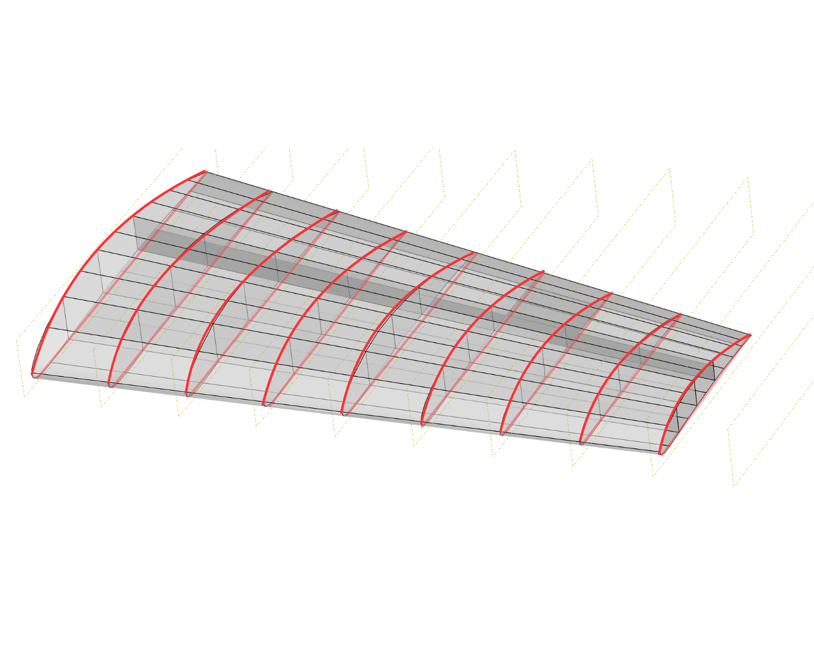
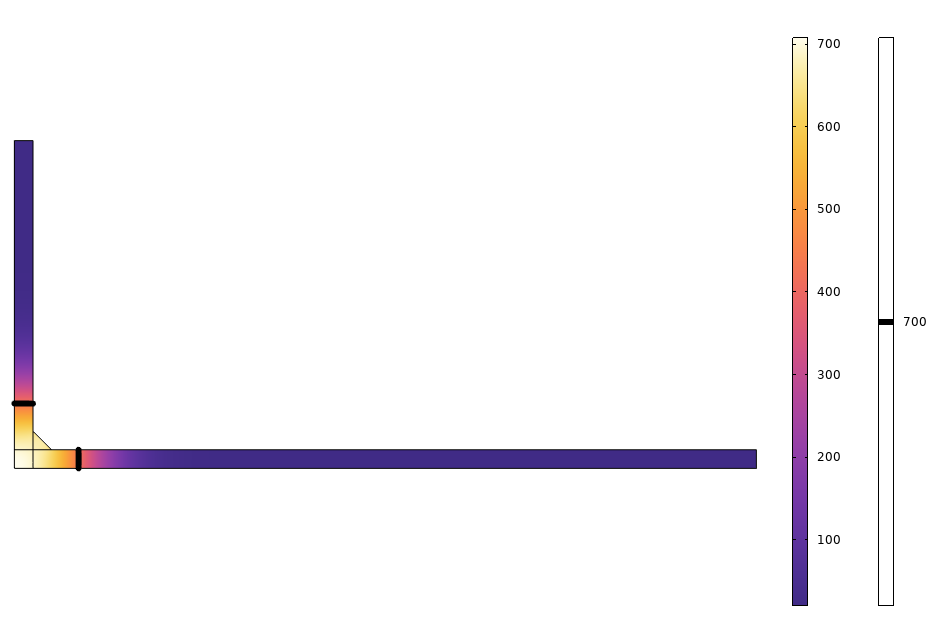
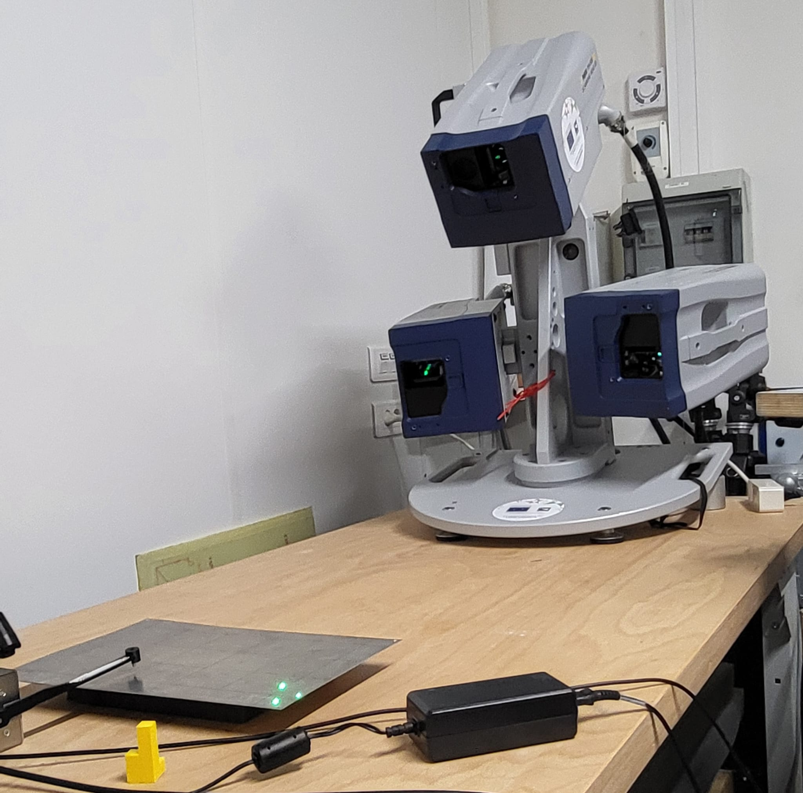
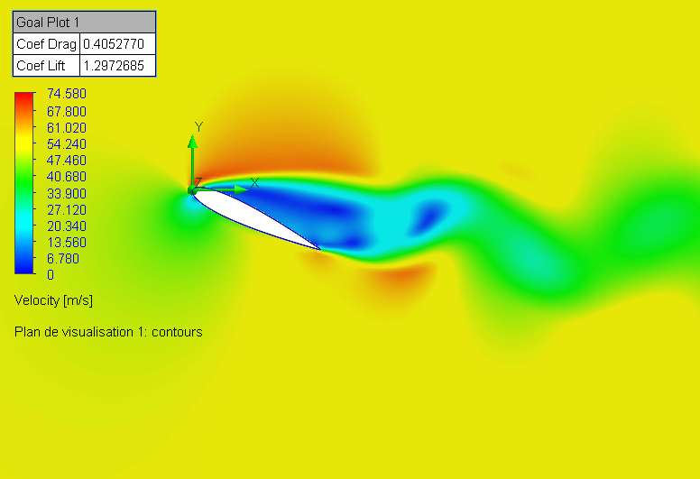
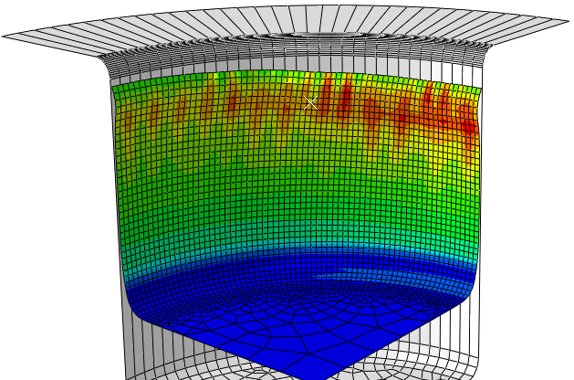
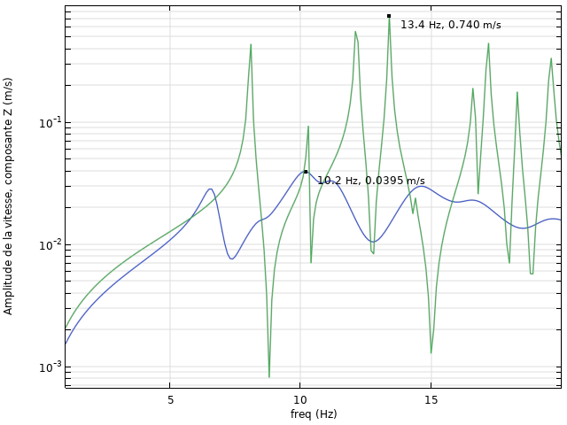

Composite hydrofoil sizing
CFD · FEAStudy of a NACA 6412 hydrofoil: lift/drag estimation with XFLR5, then load transfer to a finite element model to assess structural integrity and explore a composite version.
Holding a Master’s degree in Mechanical Engineering and Materials from Université Bretagne Sud, I use numerical simulation and engineering analysis tools to understand, design, and optimise mechanical systems, both in R&D and industrial environments, through projects combining modelling and experimental work.
A selection of academic work and my final R&D internship.

Study of a NACA 6412 hydrofoil: lift/drag estimation with XFLR5, then load transfer to a finite element model to assess structural integrity and explore a composite version.

2D modelling of a T-joint weld on martensitic steel 410: thermal–metallurgical–mechanical coupling, phase transformations, heat-affected zone analysis, residual stresses and distortions.

Laser vibrometer testing campaign on flax/carbon composite plates: dynamic response and modal analysis, then comparison with Abaqus and COMSOL models to validate modelling assumptions and material representation.

Numerical study of cylinder drag across Reynolds numbers, then analysis of a NACA 0015 airfoil imported in SolidWorks: lift/drag versus angle of attack, flow regimes observation and velocity field visualisation.

Deep-drawing simulation from 2D to 3D: tool and sheet definition, material model choice, anisotropy effects, and analysis of stress and thickness distribution.

Development and optimisation of numerical vibro-acoustic interaction models: COMSOL modelling of vibration propagation through soil, piles, concrete masses, ventilation ducts and composite floors; comparison of simulation vs on-site measurements; parameter tuning; Python scripting to automate post-processing.
Comfortable with simulation, on-site work and client-facing contexts.
Finite element modelling in COMSOL of structures under vibratory excitations, modal and admittance analyses, validation against vibration/acoustic measurements, Python scripts for post-processing and optimisation of multi-source simulation workflows.
Entrepreneurship project (Student-Entrepreneur status): market research, value proposition, prototyping, pitching and communication, web tools to present the project.
Contribution to an embedded application, e-commerce website development, order integration automation, customer modem configuration software, English support and website redesigns.
Update of the Quality Assurance Manual, creation of operational tracking sheets, and tools to structure internal procedures and improve project follow-up.
Strong fundamentals in mechanics, complemented by modern numerical tools.
Open to a first engineering position (design office / R&D) or collaborations in numerical simulation.